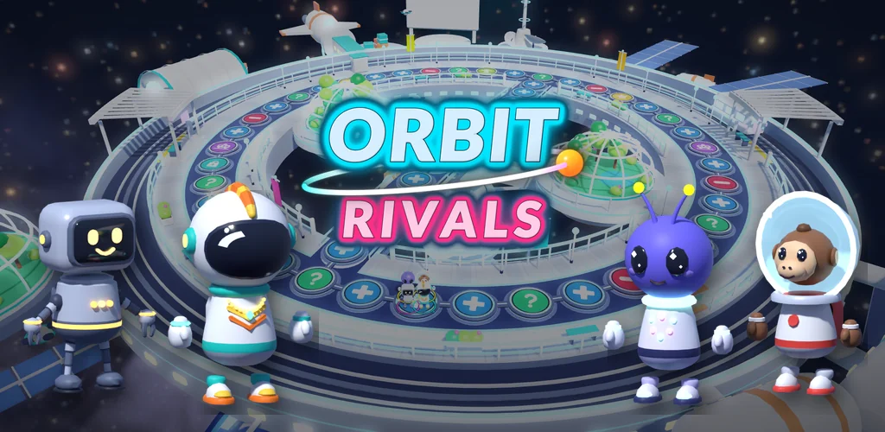

Orbit Rivals 1.3.0 ·
Llega Tusko y la invitación con enlace
- Tusko, el Mamut Mortal, el cadete número 12. Su Embestida suma 2 a la tirada, y quien esté en las casillas por las que pasa retrocede 2. Trae 40 emotes propios, con su voz: ya hay 540.
- «Invitar» con enlace: tu amigo entra directamente en tu sala. En Android funciona aunque tenga que instalar el juego primero. También puedes compartir la imagen del podio.
- ANILLOS DE SATURNO, rehecho: tramos diseñados a mano, un respiro tras cada peligro y más calma. Ya no hay carreras imposibles.
- BÉISBOL, más fácil: el brillo de la bola indica a qué altura llega (rojo, alta; verde, media; azul, baja).
- RITMO tiene música propia y algo más de margen. ANCLAJE da más margen al saltar.
- DEVORADOR: si se acaban las vidas, ganan las babosas, y las vidas se ven junto al marcador.
- SENDERO: la cámara sigue siempre a quien juega en tu pantalla.
- Más calma en línea: 30 segundos para tirar (antes eran 15). Si alguien se ausenta, un bot ocupa su sitio a los 30 segundos.
- Ratón en los minijuegos de joystick: se arrastra con el botón izquierdo y el derecho es la acción.
- La primera partida guiada explica los Poderes y tu habilidad.
- Canjear código: una tarjeta nueva en la pestaña Materia oscura, también en el navegador y en el ordenador.
- Jugar en local sin dar tu fecha de nacimiento: solo se pide para jugar en línea, y se explica por qué.
- Los dados de Aurora ya no quedan tapados por la barandilla. Nos lo avisó un jugador en itch.io.